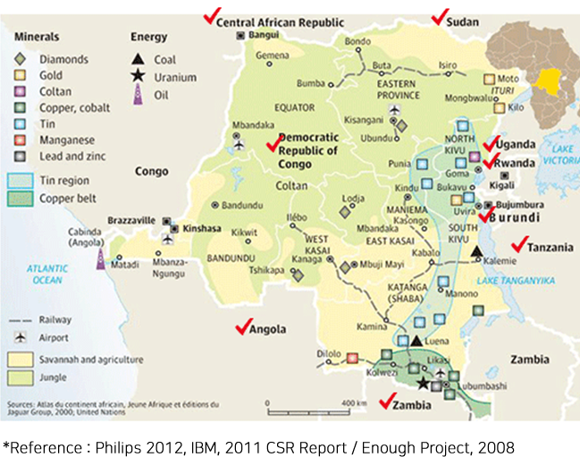
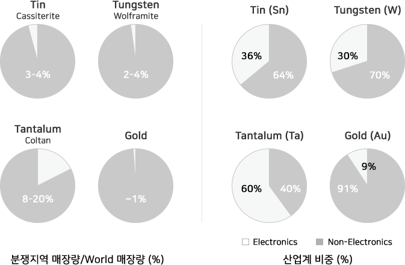

분쟁광물
'분쟁광물'이란
분쟁광물은 아프리카의 분쟁지역(콩고민주공화국, 중앙아프리카공화국 등 10개국)에서 채굴되는 광물로서 주석, 텅스텐, 탄탈륨, 금(이하 '3TG'라 한다)을 일컫는 광물입니다.
이 지역의 게릴라나 반군은 군자금 확보를 위하여 광물자원을 채굴하고 있고, 그 과정에서 인권유린, 아동노동 착취, 성폭행 등 사회적 문제를 발생시키고 있습니다.
선진국들을 중심으로 이들 지역에서 채굴되는 4대 광물(3TG : 주석, 텅스텐, 탄탈륨, 금)을 분쟁광물로 지정하였습니다. 또한 채굴자금이 반군의 군자금으로 유입되는 것을 방지하고자 기업들의 분쟁광물 사용을 제재하는 새로운 규제가 2014년을 시작으로 발효된 바, 이를 '분쟁광물규제'라 합니다.
분쟁광물(3TG) : 주석(Tin), 탄탈륨(Tantalum), 텡스텐(Tungsten), 금(Gold)
분쟁지역(10개국) : DR콩고, 콩고, 남수단, 르완다, 브룬디, 우간다, 잠비아, 앙골라, 탄자니아, 중앙아프리카
분쟁지역 분쟁광물 매장량
- 
- 
제이앤티씨는 분쟁광물 사용을 금지하는
국제적 노력에 적극적으로 동참하고 있습니다.
제이앤티씨는 국제적으로 이슈가 되고 있는 분쟁광물에 대하여, 관련 법규를 준수하고 국내외 협력사 및 고객사들과 함께 체계적인 공급망 관리를 위하여 공동 대응하고 있으며, 정부 정책 및 지원내용을 모니터링하여 분쟁광물규제대응과 이에 대한 점진적인 프로세스를 구축해 나갈 것입니다.
-
EICC-GeSi가 제공하는 분쟁광물사용보고 질의서(EICC Template)를 활용하여, 국내외 협력업체를 대상으로 분쟁광물의 사용현황조사 실시를 통해 분쟁광물 사용여부를 철저히 조사할 것입니다.
-
국내외 협력업체의 분쟁광물 사용보고질의서 제출과 분쟁광물을 사용하지 않는다는 미사용준수 동의서를 서면으로 확인하고 요청할 것입니다.
-
협력업체의 분쟁광물에 대한 원산지 및 제련소, 해당 제련소에서 사용하는 광물의 원산지 파악을 의무화하고, 분쟁광물 규제를 준수할 수 있도록 함께 노력해 나갈 것 입니다.
-
국내외 협력업체에서 사용하는 광물에 대한 원산지 및 제련소, 해당 제련소에서 사용하는 광물의 원산지 파악을 의무화하여 분쟁광물 규제를 준수하도록 하며, CFS(Conflict-Free Smelter) 프로그램을 준수하는 광물의 채택을 장려할 것입니다.
-
아동공 등의 인권문제로 이슈화되고 있는 코발트에 대해서도 분쟁광물에 추가하여 동일하게 대응할 것입니다.